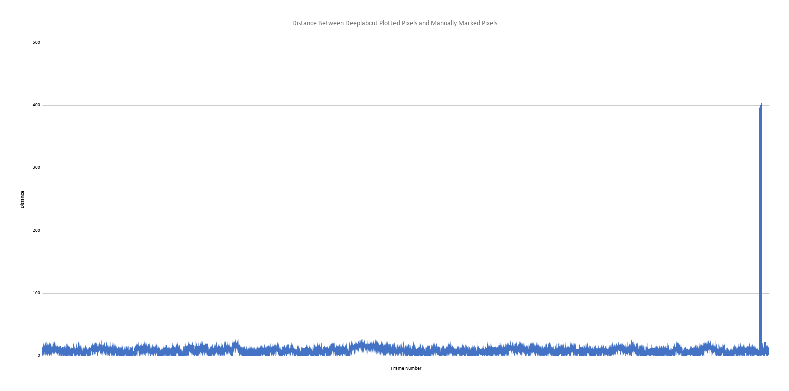

4. DeepLabCut Plots Results¶
a. Centroid Network Plots¶
Plot 1

This plot shows the X and Y position of the fly’s centroid over the course of the entire video. The plot shows the centroid’s position in perspective of the frame of the video.
Plot 2

This plot also displays the X and Y position of the centroid over time in a linear fashion.
Plot 3
This plot shows how much the centroid moves between each frame. High values would be indicative of when the label “jumps” unnaturally from one frame to the next. The low values depicted in the graph are what we expect to see.
Plot 4

This plot shows the confidence score of the network over the course of the video. We see that for the majority of the video, the network has a maximum confidence score of 1.0. The sudden drop towards the end is caused by the fly losing illumination in the video and becoming blurry.
Plot 5
This plot shows the euclidean distance between the labels placed by DeepLabCut and the labels from the TOLC device. The points are very close to one another for nearly the entire video, indicating that the performance of DeepLabCut is nearly identical to that of a human. The large spike at the end of this plot is caused by (like the confidence graph) the fly becoming poorly illuminated in the video. For that reason, the spike can be disregarded for the sake of fair comparison.
b. Legs Networks¶
Plot 6
This plot shows the X and Y position of each of the fly’s legs over the course of the entire video. The plot shows the legs’s position in perspective of the frame of the video.
Plot 7

This plot also displays the X and Y position of each leg over time in a linear fashion.
Plot 8

This plot shows how much the legs move between each frame. High values would be indicative of when the label “jumps” unnaturally from one frame to the next. The low values depicted in the graph are what we expect to see. We note that there is a larger concentration of higher values compared to the centroid graph. The legs of the fly more frequently become invisible in the video which causes this.
Plot 9

Confidence scores for the legs network. Immediately we see that the network’s confidence varies widely over the course of the video. This could be remedied to a degree by refining the network. The most improvement to this would likely be a better method of recording the fly so that its features do not become undetectable.